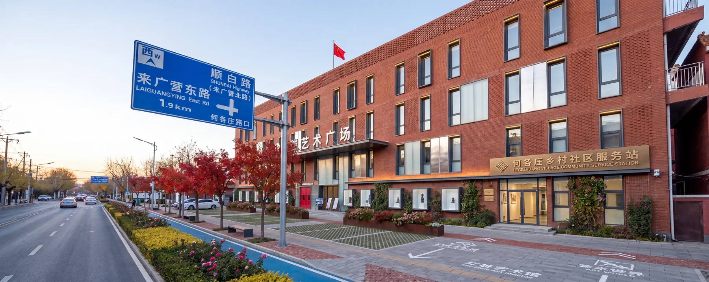
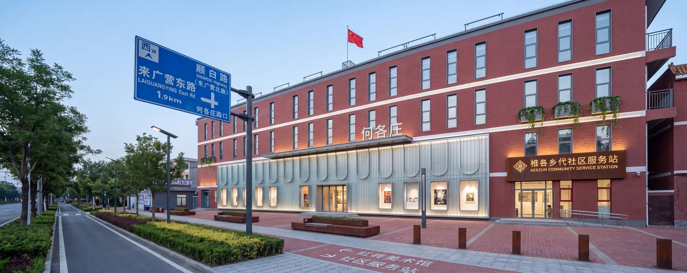
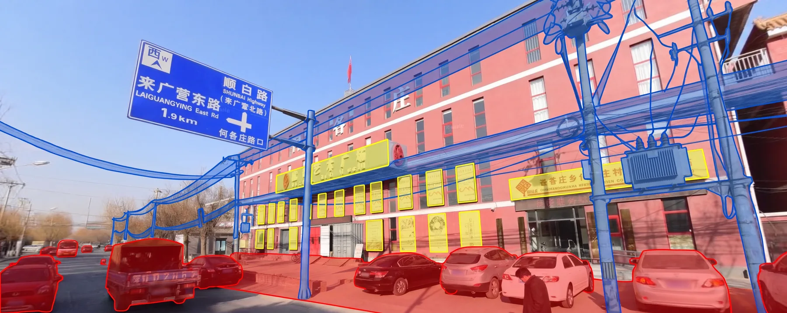
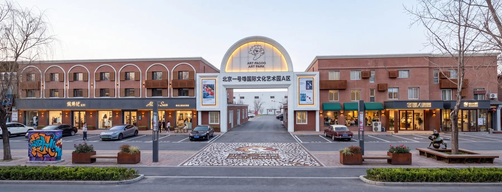

Problem
项目问题
传统城市微空间调研样本有限、反馈周期长，跨专业决策依赖大量线下调研和专家会议。
成果 PPT 展示
Automated diagnosis to generative design for urban micro-space renewal

城市微更新调研周期长，跨专业反馈难以快速形成策略闭环。
用虚拟居民和专家代理模拟调研、诊断和生成式策略协作。
从数据采集到策略生成的城市更新多智能体流程。
参与流程梳理、数据链路表达和成果展示整理。
Problem
传统城市微空间调研样本有限、反馈周期长，跨专业决策依赖大量线下调研和专家会议。
Method
Output
把传统社区调研与专家会诊转化为可自动采样、可反复模拟、可输出生成式方案的 AI 决策工作流。
Gallery


